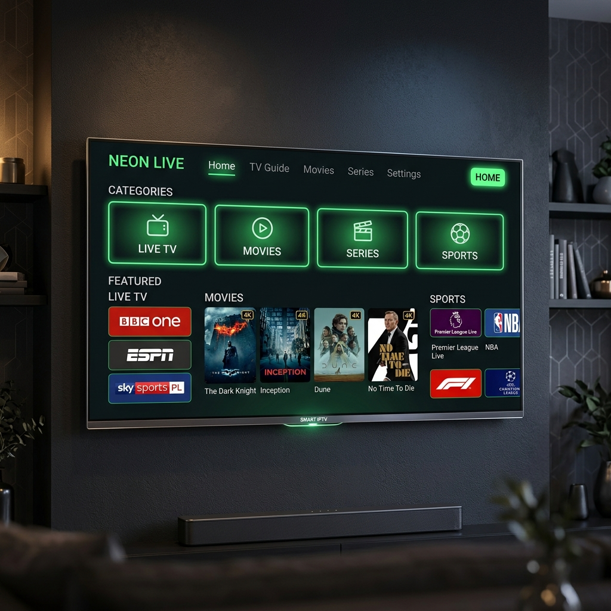
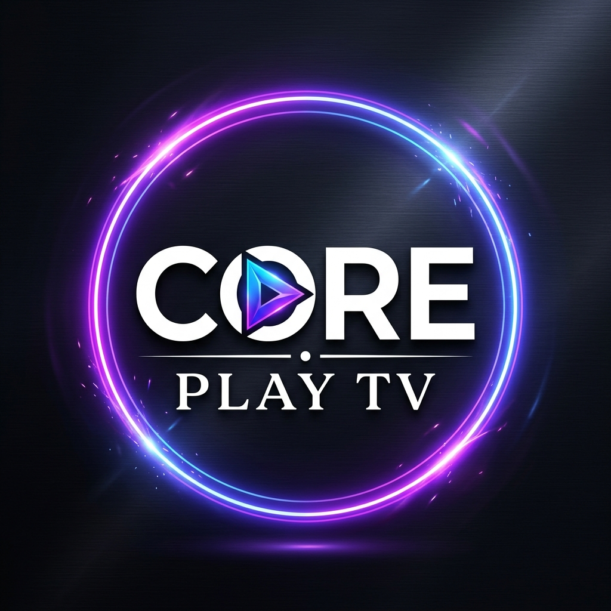
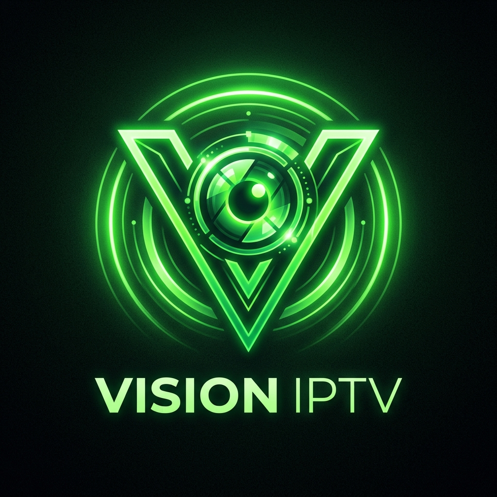
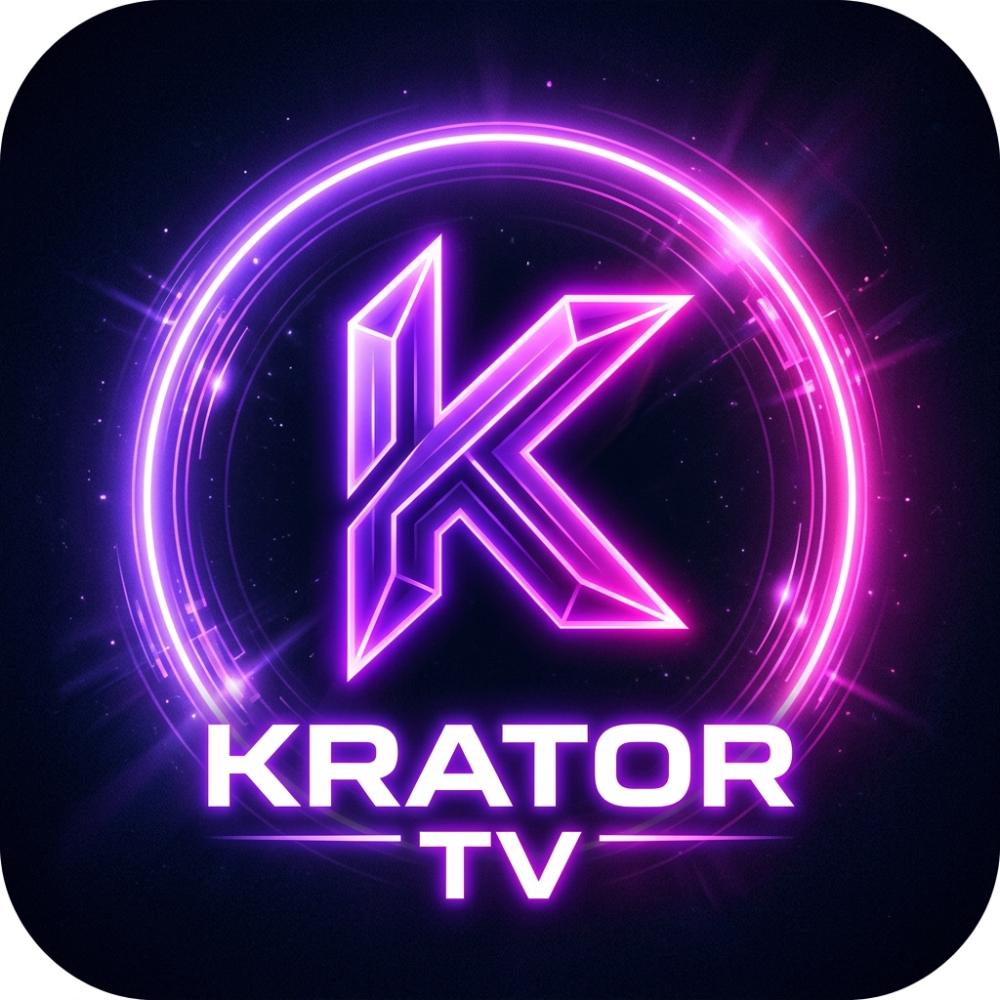
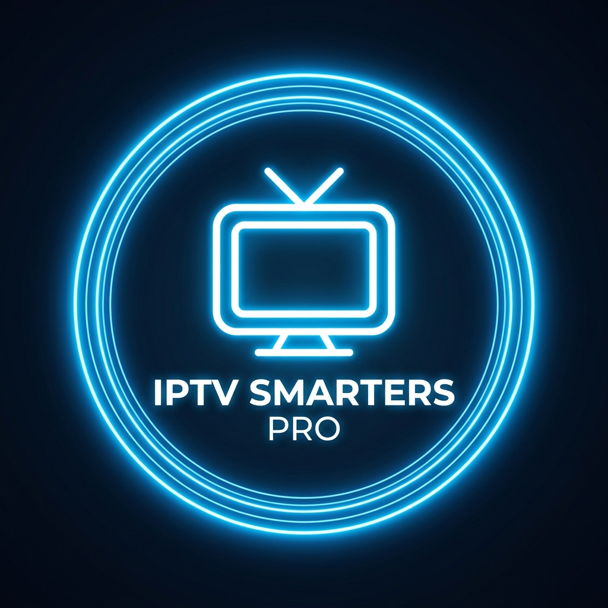

Interface moderna compatível com Smart TV, TV Box e Celular.
Ranking Atualizado: Melhor IPTV de 2026
Confira a lista definitiva das plataformas que oferecem o teste IPTV grátis com a melhor estabilidade e qualidade do mercado nacional.

Coreplay TV
A referência absoluta em teste IPTV grátis com ativação instantânea e servidor dedicado para futebol ao vivo.
- Canais 4K reais sem compressão
- Painel de usuário intuitivo
- Servidor Anti-Traffic (IPTV sem travar)
Warez TV Pro
Ideal para quem busca uma lista IPTV completa com maior foco em filmes, séries e lançamentos de cinema.
- VOD atualizado diariamente
- Compatível com todos os players
- Suporte humanizado 24h

Vision IPTV
Performance de elite com a melhor IPTV para quem possui conexões de internet limitadas ou oscilantes.
- Codec H.265 de alta compressão
- Grade esportiva global completa
- Teste IPTV 24 horas disponível

Krator TV
Para quem quer iptv teste grátis rápido e prático. Foco total em canais abertos, regionais e notícias.
- Interface ultra-leve para Smart TV
- Canais regionais exclusivos
- Instalação guiada por vídeo
Unitv
Serviço robusto para TV Box com teste iptv sem travar baseado em tecnologia P2P e CDN híbrida.
- Aplicativo nativo exclusivo
- Função Catch-up (Gravação 7 dias)
- Espaço Kids com controle parental

IPTV Smarters Pro
Referência em suporte técnico para ativação de lista iptv atualizada em múltiplos aplicativos.
- Servidor DNS otimizado
- Guia completo de aplicativos
- Ativação de API Xtream Codes
Comparativo: Escolha o Melhor para Você
| Recurso | Coreplay TV | Warez TV Pro | Vision Coreplay | Unitv |
|---|---|---|---|---|
| Estabilidade | CDN Premium (Máxima) | Alta Performance | Alta Performance | Híbrida P2P |
| Qualidade 4K | Sim, Nativo | Sim, Upscaling | Sim, Estável | HD / Full HD |
| Canais Esportivos | Completo + Premiere | Completo + DAZN | Completo + Bein | Principais Nacionais |
| Tempo de Teste | 6 Horas Grátis | 4 Horas Grátis | 12 Horas Grátis | 24 Horas Grátis |
| Preço Médio | Custo-Benefício | Intermediário | Acessível | Econômico |
Por que fazer um teste IPTV grátis em 2026?
Se você está cansado de pagar faturas exorbitantes para operadoras de TV a cabo tradicionais e ainda lidar com uma programação engessada, o teste IPTV grátis é a sua porta de entrada para a liberdade digital. Em 2026, a transmissão via protocolo IP (Internet Protocol Television) atingiu seu ápice tecnológico, permitindo que você assista a absolutamente tudo o que gosta, desde campeonatos europeus de futebol a documentários exclusivos, pagando uma fração do preço ou testando de forma gratuita.
Navegação Rápida
Ao solicitar um iptv teste grátis, você tem a oportunidade real de validar a infraestrutura do provedor antes de qualquer compromisso financeiro. Um serviço de alta qualidade deve oferecer o que chamamos de iptv sem travar, garantindo que a transmissão seja fluida e estável, mesmo em horários de pico, como durante a final da Champions League ou a estreia de uma série de grande orçamento.
O que considerar ao escolher o melhor IPTV no Brasil?
Com tantas opções no mercado, encontrar a melhor IPTV pode parecer uma tarefa difícil. Nossa recomendação é buscar plataformas profissionais que operam com servidores replicados.
🚀 Tecnologia CDN
Servidores "Edge" espalhados pelo Brasil para garantir latência mínima e resposta instantânea.
📺 Grade 4K Real
Canais com bitrate elevado, garantindo que o seu teste IPTV grátis mostre cores vibrantes.
🎬 VOD Semanal
Biblioteca de filmes e séries atualizada automaticamente com as últimas estreias do cinema.
💬 Suporte 24h
Atendimento via WhatsApp pronto para auxiliar na ativação da sua lista IPTV 2026.
💡 Dica de Especialista: Traffic Shaping
Muitas operadoras de internet limitam a velocidade do streaming propositalmente. Se o seu iptv sem travar apresentar lentidão, tente usar um servidor DNS do Google (8.8.8.8) ou uma VPN. Isso muitas vezes libera o fluxo total de dados.
A Ciência por trás do IPTV sem travar
Muitas pessoas perguntam: "Por que meu IPTV trava?". A resposta geralmente está no balanceamento de carga. Um iptv sem travar de verdade utiliza redundância. Além disso, o uso de codecs modernos como o H.265 (HEVC) permite que o vídeo seja transmitido com metade do tamanho de um H.264 tradicional, mantendo a mesma qualidade de imagem.
Formatos de Acesso: M3U vs Xtream Codes
Durante o seu iptv teste agora, prefira sempre a opção Xtream Codes. Ele carrega as categorias de forma organizada, inclui o guia de programação (EPG) e as artes de capa dos filmes automaticamente.
Como configurar o IPTV em diferentes dispositivos
A versatilidade é o grande trunfo da lista iptv 2026. Veja o passo a passo simplificado:
Smart TVs
Baixe o IPTV Smarters ou Smart IPTV. Insira os dados do teste ou o código MAC.
Android / TV Box
Instale o aplicativo oficial do provedor ou players premium como o TiviMate.
Celular & iOS
Use o XCIPTV no Android ou Cloud Stream no iPhone para máxima mobilidade.
O Futuro do Entretenimento em 2026
Com a chegada do 5G, a demanda pelo melhor IPTV disparou. A democratização do acesso a canais de alta definição é um caminho sem volta. Use o nosso ranking como bússola e garanta que sua experiência com iptv teste grátis seja exatamente o que você espera: completa, estável e surpreendente.
Depoimentos Reais de quem já Testou
Veja a opinião de quem utiliza nossas recomendações diariamente sob condições reais de uso.
"Testei várias opções e sempre travava nos jogos de domingo. Depois que comecei a usar o Coreplay, consegui assistir futebol ao vivo sem travamento nenhum, mesmo no Wi-Fi aos 3 meses de uso em casa. Sensacional o teste iptv deles."
"O foco para mim era cinema. O iptv grátis da Warez TV Pro me surpreendeu pela quantidade de filmes novos que nem chegaram no streaming oficial ainda. Uso no Fire Stick e recomendo muito."
"Configurei na minha Smart TV LG antiga e achei que ia travar, mas rodou muito bem. O iptv teste grátis de 6 horas foi decisivo para eu assinar o plano. Canais infantis completos para meus filhos."
"O sistema de teste iptv automático é o que eu precisava. Peguei os dados no meio da madrugada e o acesso chegou na hora no meu WhatsApp. Tecnologia de ponta, iptv sem travar real."
"Uso no celular enquanto estou no ônibus indo pro trabalho e raramente cai a conexão, mesmo no 4G. Esse é o melhor iptv para quem está sempre na rua."
"Sou técnico em redes e analisei o ping da lista Vision. É incrível como o delay é quase zero. Ótimo para assistir as rodadas do brasileirão sem ouvir o vizinho gritar gol antes."
Avaliado por +12.000 usuários reais de todo o Brasil
Dúvidas Frequentes sobre Teste IPTV
O teste IPTV grátis é uma oportunidade fornecida pelos provedores para que você avalie o serviço. Ele serve para testar se a lista IPTV roda bem na sua internet, se os canais te agradam e se o aplicativo é fácil de usar.
O teste IPTV automático é um robô que processa seu pedido. Você preenche o formulário e ele te envia o usuário e senha imediatamente, sem que você precise esperar por um atendente humano.
A maioria dos períodos de iptv teste grátis dura entre 4 a 6 horas. Algumas plataformas especiais podem oferecer até 24 ou 48 horas em eventos promocionais para garantir um teste IPTV longo.
Os travamentos podem ser causados por servidores ruins, internet lenta ou má configuração do DNS. Escolher um dos itens do nosso ranking garante um iptv sem travar devido aos servidores CDN de ponta.
Sim. Recomendamos o IPTV Smarters Pro, XCIPTV ou o Bob Player. Eles são compatíveis com os logins que você recebe no teste IPTV grátis.
Sim. Quase todas as Smart TVs Samsung fabricadas após 2017 possuem suporte a aplicativos de IPTV como o IBO Player ou o próprio Smarters. O iptv teste agora funciona perfeitamente nestas telas.
Basta clicar no botão de CTA dos provedores em nosso ranking. Você será redirecionado para o WhatsApp deles onde poderá solicitar seu iptv teste grátis com suporte de um atendente.
Os testes costumam liberar apenas 1 tela. Se precisar de mais telas, informe ao suporte na hora de contratar o plano mensal para garantir que o melhor iptv funcione em todos os seus cômodos.
É uma tecnologia de API que organiza a lista por categorias (Futebol, Novelas, Filmes). É muito mais simples que o link M3U longo e muito mais difícil de travar.
Sim, todas as nossas recomendações de melhor iptv incluem a grade completa de canais abertos nacionais com qualidade HD, além de canais locais de várias regiões.
Alguns provedores como a Vision Coreplay liberam 24 horas de teste em datas festivas ou finais de semana de grandes eventos. Fique atento aos links oficiais.
Vá na Google Play Store, baixe o app recomendado pelo seu provedor, insira os dados do teste IPTV grátis e clique em login. O processo leva menos de um minuto.
Funciona para canais em SD. Para HD e garantir um iptv sem travar, o ideal é ter acima de 10 Mbps estável no Wi-Fi ou cabo.
Sim! Incluímos canais dos EUA, Portugal, Itália e muitos outros país de língua inglesa e espanhola nas listas premium do nosso ranking iptv 2026.
No próprio site onde você fez o teste iptv existe a opção de compra. Após o pagamento via PIX, o sistema renova seu acesso automaticamente.
VOD significa Video On Demand. É a parte do serviço que funciona como a Netflix, onde você escolhe um filme ou série para assistir a hora que quiser, tudo incluso na lista iptv atualizada.
Baixe o app GSE Smart IPTV na App Store e cole o link M3U recebido no seu iptv teste grátis. O iPhone tem uma excelente performance de processamento para streaming.
A chuva só afeta se a sua internet cair. Diferente da antena parabólica ou Sky, o iptv sem travar depende apenas de uma conexão de dados estável.
O acesso será bloqueado. Se você gostou da qualidade, basta entrar em contato com o suporte para adquirir um plano de longa duração.
Com certeza! Essa é a função mais usada. O iptv futebol é completo, com Premiere, ESPN, TNT Sports e canais de clubes incluídos.
O CDN espalha o sinal por vários pontos do Brasil. Isso significa que você pega o sinal do servidor mais próximo da sua casa, tornando o iptv muito mais rápido.
Sim, Discovery, NatGeo, History, Disney, Nick e todos os canais infantis e educativos estão presentes nas melhores listas iptv do nosso guia.
Sim, alguns usuários usam VPN para evitar o Traffic Shaping de operadoras. Nossos provedores recomendados são compatíveis com qualquer VPN de mercado.
Os melhores apps carregam o EPG (Electronic Program Guide) automaticamente ao usar o login do teste IPTV grátis. Você vê o nome do programa atual e o próximo.
O mensal é ótimo para quem quer apenas testar por um mês. O anual costuma ter até 40% de desconto, sendo a melhor opção para quem já fez o iptv teste agora e aprovou a qualidade.
Comece seu Teste Grátis Agora!
Não corra riscos com amadores. Escolha quem é líder em tecnologia e tenha a grade de TV mais completa do Brasil em suas mãos hoje.
Ativação em menos de 2 minutos • Sem cartão de crédito